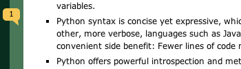
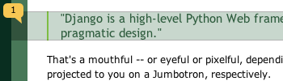
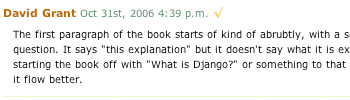

第四章 模板5313322641110531152113251841
在前一章中，你可能已经注意到我们在例子视图中返回文本的方式有点特别。 也就是说，HTML被直接硬编码在 Python 代码之中。
def current_datetime(request):
now = datetime.datetime.now()
html = "<html><body>It is now %s.</body></html>" % now
return HttpResponse(html)
尽管这种技术便于解释视图是如何工作的，但直接将HTML硬编码到你的视图里却并不是一个好主意。 让我们来看一下为什么：
对页面设计进行的任何改变都必须对 Python 代码进行相应的修改。 站点设计的修改往往比底层 Python 代码的修改要频繁得多，因此如果可以在不进行 Python 代码修改的情况下变更设计，那将会方便得多。
1
Python 代码编写和 HTML 设计是两项不同的工作，大多数专业的网站开发环境都将他们分配给不同的人员（甚至不同部门）来完成。 设计者和HTML/CSS的编码人员不应该被要求去编辑Python的代码来完成他们的工作。
程序员编写 Python代码和设计人员制作模板两项工作同时进行的效率是最高的，远胜于让一个人等待另一个人完成对某个既包含 Python又包含 HTML 的文件的编辑工作。
基于这些原因，将页面的设计和Python的代码分离开会更干净简洁更容易维护。 我们可以使用 Django的 模板系统 (Template System)来实现这种模式，这就是本章要具体讨论的问题。
模板系统基本知识1
模板是一个文本，用于分离文档的表现形式和内容。 模板定义了占位符以及各种用于规范文档该如何显示的各部分基本逻辑（模板标签）。 模板通常用于产生HTML，但是Django的模板也能产生任何基于文本格式的文档。
让我们从一个简单的例子模板开始。 该模板描述了一个向某个与公司签单人员致谢 HTML 页面。 可将其视为一个格式信函：
<html>
<head><title>Ordering notice</title></head>
<body>
<h1>Ordering notice</h1>
<p>Dear {{ person_name }},</p>
<p>Thanks for placing an order from {{ company }}. It's scheduled to
ship on {{ ship_date|date:"F j, Y" }}.</p>
<p>Here are the items you've ordered:</p>
<ul>
{% for item in item_list %}
<li>{{ item }}</li>
{% endfor %}
</ul>
{% if ordered_warranty %}
<p>Your warranty information will be included in the packaging.</p>
{% else %}
<p>You didn't order a warranty, so you're on your own when
the products inevitably stop working.</p>
{% endif %}
<p>Sincerely,<br />{{ company }}</p>
</body>
</html>
该模板是一段添加了些许变量和模板标签的基础 HTML 。 让我们逐步分析一下：
用两个大括号括起来的文字（例如 {{ person_name }} ）称为 变量(variable) 。这意味着在此处插入指定变量的值。 如何指定变量的值呢？ 稍后就会说明。
3被大括号和百分号包围的文本(例如 {% if ordered_warranty %} )是 模板标签(template tag) 。标签(tag)定义比较明确，即： 仅通知模板系统完成某些工作的标签。
这个例子中的模板包含一个for标签（ {% for item in item_list %} ）和一个if 标签（{% if ordered_warranty %} ）
for标签类似Python的for语句，可让你循环访问序列里的每一个项目。 if 标签，正如你所料，是用来执行逻辑判断的。 在这里，tag标签检查ordered_warranty值是否为True。如果是，模板系统将显示{% if ordered_warranty %}和{% else %}之间的内容；否则将显示{% else %}和{% endif %}之间的内容。{% else %}是可选的。
最后，这个模板的第二段中有一个关于filter过滤器的例子，它是一种最便捷的转换变量输出格式的方式。 如这个例子中的{{ship_date|date:”F j, Y” }}，我们将变量ship_date传递给date过滤器，同时指定参数”F j,Y”。date过滤器根据参数进行格式输出。 过滤器是用管道符(|)来调用的，具体可以参见Unix管道符。
4
Django 模板含有很多内置的tags和filters,我们将陆续进行学习. 附录F列出了很多的tags和filters的列表,熟悉这些列表对你来说是个好建议. 你依然可以利用它创建自己的tag和filters。这些我们在第9章会讲到。
如何使用模板系统
让我们深入研究模板系统，你将会明白它是如何工作的。但我们暂不打算将它与先前创建的视图结合在一起，因为我们现在的目的是了解它是如何独立工作的。 。 （换言之， 通常你会将模板和视图一起使用，但是我们只是想突出模板系统是一个Python库，你可以在任何地方使用它，而不仅仅是在Django视图中。）
在Python代码中使用Django模板的最基本方式如下：
可以用原始的模板代码字符串创建一个 Template 对象， Django同样支持用指定模板文件路径的方式来创建 Template 对象;
调用模板对象的render方法，并且传入一套变量context。它将返回一个基于模板的展现字符串，模板中的变量和标签会被context值替换。
代码如下：
>>> from django import template
>>> t = template.Template('My name is {{ name }}.')
>>> c = template.Context({'name': 'Adrian'})
>>> print t.render(c)
My name is Adrian.
>>> c = template.Context({'name': 'Fred'})
>>> print t.render(c)
My name is Fred.
以下部分逐步的详细介绍
创建模板对象
创建一个 Template 对象最简单的方法就是直接实例化它。 Template 类就在 django.template 模块中，构造函数接受一个参数，原始模板代码。 让我们深入挖掘一下 Python的解释器看看它是怎么工作的。
转到project目录（在第二章由 django-admin.py startproject 命令创建）， 输入命令 python manage.py shell 启动交互界面。
一个特殊的Python提示符
如果你曾经使用过Python，你一定好奇，为什么我们运行python manage.py shell而不是python。这两个命令都会启动交互解释器，但是manage.py shell命令有一个重要的不同： 在启动解释器之前，它告诉Django使用哪个设置文件。 Django框架的大部分子系统，包括模板系统，都依赖于配置文件；如果Django不知道使用哪个配置文件，这些系统将不能工作。
如果你想知道，这里将向你解释它背后是如何工作的。 Django搜索DJANGO_SETTINGS_MODULE环境变量，它被设置在settings.py中。例如，假设mysite在你的Python搜索路径中，那么DJANGO_SETTINGS_MODULE应该被设置为：’mysite.settings’。
当你运行命令：python manage.py shell，它将自动帮你处理DJANGO_SETTINGS_MODULE。 在当前的这些示例中，我们鼓励你使用`` python manage.py shell``这个方法，这样可以免去你大费周章地去配置那些你不熟悉的环境变量。
随着你越来越熟悉Django，你可能会偏向于废弃使用`` manage.py shell`` ，而是在你的配置文件.bash_profile中手动添加 DJANGO_SETTINGS_MODULE这个环境变量。
让我们来了解一些模板系统的基本知识：
>>> from django.template import Template
>>> t = Template('My name is {{ name }}.')
>>> print t
如果你跟我们一起做，你将会看到下面的内容：
<django.template.Template object at 0xb7d5f24c>
0xb7d5f24c 每次都会不一样，这没什么关系；这只是Python运行时 Template 对象的ID。
当你创建一个 Template 对象，模板系统在内部编译这个模板到内部格式，并做优化，做好 渲染的准备。 如果你的模板语法有错误，那么在调用 Template() 时就会抛出 TemplateSyntaxError 异常：
>>> from django.template import Template
>>> t = Template('{% notatag %}')
Traceback (most recent call last):
File "<stdin>", line 1, in ?
...
django.template.TemplateSyntaxError: Invalid block tag: 'notatag'
这里，块标签(block tag)指向的是`` {% notatag %}``，块标签与模板标签是同义的。
系统会在下面的情形抛出 TemplateSyntaxError 异常：
无效的tags
标签的参数无效
无效的过滤器
过滤器的参数无效
无效的模板语法
未封闭的块标签 （针对需要封闭的块标签）
模板渲染2
一旦你创建一个 Template 对象，你可以用 context 来传递数据给它。 一个context是一系列变量和它们值的集合。
context在Django里表现为 Context 类，在 django.template 模块里。 她的构造函数带有一个可选的参数： 一个字典映射变量和它们的值。 调用 Template 对象 的 render() 方法并传递context来填充模板：
>>> from django.template import Context, Template
>>> t = Template('My name is {{ name }}.')
>>> c = Context({'name': 'Stephane'})
>>> t.render(c)
u'My name is Stephane.'
我们必须指出的一点是，t.render(c)返回的值是一个Unicode对象，不是普通的Python字符串。 你可以通过字符串前的u来区分。 在框架中，Django会一直使用Unicode对象而不是普通的字符串。 如果你明白这样做给你带来了多大便利的话，尽可能地感激Django在幕后有条不紊地为你所做这这么多工作吧。 如果不明白你从中获益了什么，别担心。你只需要知道Django对Unicode的支持，将让你的应用程序轻松地处理各式各样的字符集，而不仅仅是基本的A-Z英文字符。
字典和Contexts
Python的字典数据类型就是关键字和它们值的一个映射。 Context 和字典很类似， Context 还提供更多的功能，请看第九章。
变量名必须由英文字符开始 （A-Z或a-z）并可以包含数字字符、下划线和小数点。 （小数点在这里有特别的用途，稍后我们会讲到）变量是大小写敏感的。
下面是编写模板并渲染的示例：
>>> from django.template import Template, Context
>>> raw_template = """<p>Dear {{ person_name }},</p>
...
... <p>Thanks for placing an order from {{ company }}. It's scheduled to
... ship on {{ ship_date|date:"F j, Y" }}.</p>
...
... {% if ordered_warranty %}
... <p>Your warranty information will be included in the packaging.</p>
... {% else %}
... <p>You didn't order a warranty, so you're on your own when
... the products inevitably stop working.</p>
... {% endif %}
...
... <p>Sincerely,<br />{{ company }}</p>"""
>>> t = Template(raw_template)
>>> import datetime
>>> c = Context({'person_name': 'John Smith',
... 'company': 'Outdoor Equipment',
... 'ship_date': datetime.date(2009, 4, 2),
... 'ordered_warranty': False})
>>> t.render(c)
u"<p>Dear John Smith,</p>\n\n<p>Thanks for placing an order from Outdoor
Equipment. It's scheduled to\nship on April 2, 2009.</p>\n\n\n<p>You
didn't order a warranty, so you're on your own when\nthe products
inevitably stop working.</p>\n\n\n<p>Sincerely,<br />Outdoor Equipment
</p>"
让我们逐步来分析下这段代码：
首先我们导入 （import）类 Template 和 Context ，它们都在模块 django.template 里。
我们把模板原始文本保存到变量 raw_template 。注意到我们使用了三个引号来 标识这些文本，因为这样可以包含多行。
接下来，我们创建了一个模板对象 t ，把 raw_template 作为 Template 类构造函数的参数。
我们从Python的标准库导入 datetime 模块，以后我们将会使用它。
然后，我们创建一个 Context 对象， c 。 Context 构造的参数是Python 字典数据类型。 在这里，我们指定参数 person_name 的值是 'John Smith' , 参数company 的值为 ‘Outdoor Equipment’ ，等等。
5最后，我们在模板对象上调用 render() 方法，传递 context参数给它。 这是返回渲染后的模板的方法，它会替换模板变量为真实的值和执行块标签。
注意，warranty paragraph显示是因为 ordered_warranty 的值为 True . 注意时间的显示， April 2, 2009 , 它是按 'F j, Y' 格式显示的。
2如果你是Python初学者，你可能在想为什么输出里有回车换行的字符('\n' )而不是 显示回车换行？ 因为这是Python交互解释器的缘故： 调用 t.render(c) 返回字符串， 解释器缺省显示这些字符串的 真实内容呈现 ，而不是打印这个变量的值。 要显示换行而不是 '\n' ，使用 print 语句： print t.render(c) 。
这就是使用Django模板系统的基本规则： 写模板，创建 Template 对象，创建 Context ， 调用 render() 方法。
同一模板，多个上下文
一旦有了 模板 对象，你就可以通过它渲染多个context， 例如：
>>> from django.template import Template, Context
>>> t = Template('Hello, {{ name }}')
>>> print t.render(Context({'name': 'John'}))
Hello, John
>>> print t.render(Context({'name': 'Julie'}))
Hello, Julie
>>> print t.render(Context({'name': 'Pat'}))
Hello, Pat
无论何时我们都可以像这样使用同一模板源渲染多个context，只进行 一次模板创建然后多次调用render()方法渲染会更为高效：
# Bad
for name in ('John', 'Julie', 'Pat'):
t = Template('Hello, {{ name }}')
print t.render(Context({'name': name}))
# Good
t = Template('Hello, {{ name }}')
for name in ('John', 'Julie', 'Pat'):
print t.render(Context({'name': name}))
Django 模板解析非常快捷。 大部分的解析工作都是在后台通过对简短正则表达式一次性调用来完成。 这和基于 XML 的模板引擎形成鲜明对比，那些引擎承担了 XML 解析器的开销，且往往比 Django 模板渲染引擎要慢上几个数量级。
深度变量的查找1
在到目前为止的例子中，我们通过 context 传递的简单参数值主要是字符串，还有一个 datetime.date 范例。 然而，模板系统能够非常简洁地处理更加复杂的数据结构，例如list、dictionary和自定义的对象。
在 Django 模板中遍历复杂数据结构的关键是句点字符 (.)。
最好是用几个例子来说明一下。 比如，假设你要向模板传递一个 Python 字典。 要通过字典键访问该字典的值，可使用一个句点：
>>> from django.template import Template, Context
>>> person = {'name': 'Sally', 'age': '43'}
>>> t = Template('{{ person.name }} is {{ person.age }} years old.')
>>> c = Context({'person': person})
>>> t.render(c)
u'Sally is 43 years old.'
同样，也可以通过句点来访问对象的属性。 比方说， Python 的 datetime.date 对象有 year 、 month 和 day 几个属性，你同样可以在模板中使用句点来访问这些属性：
>>> from django.template import Template, Context
>>> import datetime
>>> d = datetime.date(1993, 5, 2)
>>> d.year
1993
>>> d.month
5
>>> d.day
2
>>> t = Template('The month is {{ date.month }} and the year is {{ date.year }}.')
>>> c = Context({'date': d})
>>> t.render(c)
u'The month is 5 and the year is 1993.'
这个例子使用了一个自定义的类，演示了通过实例变量加一点(dots)来访问它的属性，这个方法适用于任意的对象。
>>> from django.template import Template, Context
>>> class Person(object):
... def __init__(self, first_name, last_name):
... self.first_name, self.last_name = first_name, last_name
>>> t = Template('Hello, {{ person.first_name }} {{ person.last_name }}.')
>>> c = Context({'person': Person('John', 'Smith')})
>>> t.render(c)
u'Hello, John Smith.'
点语法也可以用来引用对象的* 方法*。 例如，每个 Python 字符串都有 upper() 和 isdigit() 方法，你在模板中可以使用同样的句点语法来调用它们：
>>> from django.template import Template, Context
>>> t = Template('{{ var }} -- {{ var.upper }} -- {{ var.isdigit }}')
>>> t.render(Context({'var': 'hello'}))
u'hello -- HELLO -- False'
>>> t.render(Context({'var': '123'}))
u'123 -- 123 -- True'
注意这里调用方法时并* 没有* 使用圆括号 而且也无法给该方法传递参数；你只能调用不需参数的方法。 （我们将在本章稍后部分解释该设计观。）
最后，句点也可用于访问列表索引，例如：
>>> from django.template import Template, Context
>>> t = Template('Item 2 is {{ items.2 }}.')
>>> c = Context({'items': ['apples', 'bananas', 'carrots']})
>>> t.render(c)
u'Item 2 is carrots.'
不允许使用负数列表索引。 像 {{ items.-1 }} 这样的模板变量将会引发`` TemplateSyntaxError``
Python 列表类型
一点提示： Python的列表是从0开始索引。 第一项的索引是0，第二项的是1，依此类推。
句点查找规则可概括为： 当模板系统在变量名中遇到点时，按照以下顺序尝试进行查找：
字典类型查找 （比如 foo["bar"] )
属性查找 (比如 foo.bar )
方法调用 （比如 foo.bar() )
列表类型索引查找 (比如 foo[bar] )
系统使用找到的第一个有效类型。 这是一种短路逻辑。
句点查找可以多级深度嵌套。 例如在下面这个例子中 {{person.name.upper}} 会转换成字典类型查找（ person['name'] ) 然后是方法调用（ upper() ):
>>> from django.template import Template, Context
>>> person = {'name': 'Sally', 'age': '43'}
>>> t = Template('{{ person.name.upper }} is {{ person.age }} years old.')
>>> c = Context({'person': person})
>>> t.render(c)
u'SALLY is 43 years old.'
方法调用行为
方法调用比其他类型的查找略为复杂一点。 以下是一些注意事项：
在方法查找过程中，如果某方法抛出一个异常，除非该异常有一个 silent_variable_failure 属性并且值为 True ，否则的话它将被传播。如果异常被传播，模板里的指定变量会被置为空字符串，比如:
6
>>> t = Template("My name is {{ person.first_name }}.")
>>> class PersonClass3:
... def first_name(self):
... raise AssertionError, "foo"
>>> p = PersonClass3()
>>> t.render(Context({"person": p}))
Traceback (most recent call last):
...
AssertionError: foo
>>> class SilentAssertionError(AssertionError):
... silent_variable_failure = True
>>> class PersonClass4:
... def first_name(self):
... raise SilentAssertionError
>>> p = PersonClass4()
>>> t.render(Context({"person": p}))
u'My name is .'
仅在方法无需传入参数时，其调用才有效。 否则，系统将会转移到下一个查找类型（列表索引查找）。
显然，有些方法是有副作用的，好的情况下允许模板系统访问它们可能只是干件蠢事，坏的情况下甚至会引发安全漏洞。
例如，你的一个 BankAccount 对象有一个 delete() 方法。 如果某个模板中包含了像 {{ account.delete }}这样的标签，其中`` account`` 又是BankAccount 的一个实例，请注意在这个模板载入时，account对象将被删除。
1要防止这样的事情发生，必须设置该方法的 alters_data 函数属性：
def delete(self):
# Delete the account
delete.alters_data = True
模板系统不会执行任何以该方式进行标记的方法。 接上面的例子，如果模板文件里包含了 {{ account.delete }} ，对象又具有 delete()方法，而且delete() 有alters_data=True这个属性，那么在模板载入时， delete()方法将不会被执行。 它将静静地错误退出。
如何处理无效变量
默认情况下，如果一个变量不存在，模板系统会把它展示为空字符串，不做任何事情来表示失败。 例如：
>>> from django.template import Template, Context
>>> t = Template('Your name is {{ name }}.')
>>> t.render(Context())
u'Your name is .'
>>> t.render(Context({'var': 'hello'}))
u'Your name is .'
>>> t.render(Context({'NAME': 'hello'}))
u'Your name is .'
>>> t.render(Context({'Name': 'hello'}))
u'Your name is .'
系统静悄悄地表示失败，而不是引发一个异常，因为这通常是人为错误造成的。 这种情况下，因为变量名有错误的状况或名称， 所有的查询都会失败。 现实世界中，对于一个web站点来说，如果仅仅因为一个小的模板语法错误而造成无法访问，这是不可接受的。
玩一玩上下文(context)对象
多数时间，你可以通过传递一个完全填充(full populated)的字典给 Context() 来初始化 上下文(Context) 。 但是初始化以后，你也可以使用标准的Python字典语法(syntax)向``上下文(Context)`` 对象添加或者删除条目:
>>> from django.template import Context
>>> c = Context({"foo": "bar"})
>>> c['foo']
'bar'
>>> del c['foo']
>>> c['foo']
Traceback (most recent call last):
...
KeyError: 'foo'
>>> c['newvariable'] = 'hello'
>>> c['newvariable']
'hello'
基本的模板标签和过滤器
像我们以前提到过的，模板系统带有内置的标签和过滤器。 下面的章节提供了一个多数通用标签和过滤器的简要说明。
标签
if/else
{% if %} 标签检查(evaluate)一个变量，如果这个变量为真（即，变量存在，非空，不是布尔值假），系统会显示在 {% if %} 和 {% endif %} 之间的任何内容，例如：
{% if today_is_weekend %}
<p>Welcome to the weekend!</p>
{% endif %}
{% else %} 标签是可选的：
{% if today_is_weekend %}
<p>Welcome to the weekend!</p>
{% else %}
<p>Get back to work.</p>
{% endif %}
Python 的“真值”
在Python和Django模板系统中，以下这些对象相当于布尔值的False
空列表([] )
空元组(() )
空字典({} )
空字符串('' )
零值(0 )
特殊对象None
对象False（很明显）
提示：你也可以在自定义的对象里定义他们的布尔值属性(这个是python的高级用法)。
除以上几点以外的所有东西都视为`` True``
{% if %} 标签接受 and ， or 或者 not 关键字来对多个变量做判断 ，或者对变量取反（ not )，例如： 例如：
{% if athlete_list and coach_list %}
Both athletes and coaches are available.
{% endif %}
{% if not athlete_list %}
There are no athletes.
{% endif %}
{% if athlete_list or coach_list %}
There are some athletes or some coaches.
{% endif %}
{% if not athlete_list or coach_list %}
There are no athletes or there are some coaches.
{% endif %}
{% if athlete_list and not coach_list %}
There are some athletes and absolutely no coaches.
{% endif %}
{% if %} 标签不允许在同一个标签中同时使用 and 和 or ，因为逻辑上可能模糊的，例如，如下示例是错误的： 比如这样的代码是不合法的：
{% if athlete_list and coach_list or cheerleader_list %}
系统不支持用圆括号来组合比较操作。 如果你确实需要用到圆括号来组合表达你的逻辑式，考虑将它移到模板之外处理，然后以模板变量的形式传入结果吧。 或者，仅仅用嵌套的{% if %}标签替换吧，就像这样：
{% if athlete_list %}
{% if coach_list or cheerleader_list %}
We have athletes, and either coaches or cheerleaders!
{% endif %}
{% endif %}
多次使用同一个逻辑操作符是没有问题的，但是我们不能把不同的操作符组合起来。 例如，这是合法的：
{% if athlete_list or coach_list or parent_list or teacher_list %}
并没有 {% elif %} 标签， 请使用嵌套的`` {% if %}`` 标签来达成同样的效果：
{% if athlete_list %}
<p>Here are the athletes: {{ athlete_list }}.</p>
{% else %}
<p>No athletes are available.</p>
{% if coach_list %}
<p>Here are the coaches: {{ coach_list }}.</p>
{% endif %}
{% endif %}
一定要用 {% endif %} 关闭每一个 {% if %} 标签。
for1
{% for %} 允许我们在一个序列上迭代。 与Python的 for 语句的情形类似，循环语法是 for X in Y ，Y是要迭代的序列而X是在每一个特定的循环中使用的变量名称。 每一次循环中，模板系统会渲染在 {% for %} 和 {% endfor %} 之间的所有内容。
例如，给定一个运动员列表 athlete_list 变量，我们可以使用下面的代码来显示这个列表：
<ul>
{% for athlete in athlete_list %}
<li>{{ athlete.name }}</li>
{% endfor %}
</ul>
给标签增加一个 reversed 使得该列表被反向迭代：
{% for athlete in athlete_list reversed %}
...
{% endfor %}
可以嵌套使用 {% for %} 标签：
{% for athlete in athlete_list %}
<h1>{{ athlete.name }}</h1>
<ul>
{% for sport in athlete.sports_played %}
<li>{{ sport }}</li>
{% endfor %}
</ul>
{% endfor %}
在执行循环之前先检测列表的大小是一个通常的做法，当列表为空时输出一些特别的提示。
{% if athlete_list %}
{% for athlete in athlete_list %}
<p>{{ athlete.name }}</p>
{% endfor %}
{% else %}
<p>There are no athletes. Only computer programmers.</p>
{% endif %}
因为这种做法十分常见，所以`` for`` 标签支持一个可选的`` {% empty %}`` 分句，通过它我们可以定义当列表为空时的输出内容 下面的例子与之前那个等价：
{% for athlete in athlete_list %}
<p>{{ athlete.name }}</p>
{% empty %}
<p>There are no athletes. Only computer programmers.</p>
{% endfor %}
Django不支持退出循环操作。 如果我们想退出循环，可以改变正在迭代的变量，让其仅仅包含需要迭代的项目。 同理，Django也不支持continue语句，我们无法让当前迭代操作跳回到循环头部。 （请参看本章稍后的理念和限制小节，了解下决定这个设计的背后原因）
在每个`` {% for %}``循环里有一个称为`` forloop`` 的模板变量。这个变量有一些提示循环进度信息的属性。
forloop.counter 总是一个表示当前循环的执行次数的整数计数器。 这个计数器是从1开始的，所以在第一次循环时 forloop.counter 将会被设置为1。
{% for item in todo_list %}
<p>{{ forloop.counter }}: {{ item }}</p>
{% endfor %}
forloop.counter0 类似于 forloop.counter ，但是它是从0计数的。 第一次执行循环时这个变量会被设置为0。
4forloop.revcounter 是表示循环中剩余项的整型变量。 在循环初次执行时 forloop.revcounter 将被设置为序列中项的总数。 最后一次循环执行中，这个变量将被置1。
forloop.revcounter0 类似于 forloop.revcounter ，但它以0做为结束索引。 在第一次执行循环时，该变量会被置为序列的项的个数减1。
forloop.first 是一个布尔值，如果该迭代是第一次执行，那么它被置为```` 在下面的情形中这个变量是很有用的：
3
{% for object in objects %}
{% if forloop.first %}<li class="first">{% else %}<li>{% endif %}
{{ object }}
</li>
{% endfor %}
forloop.last 是一个布尔值；在最后一次执行循环时被置为True。 一个常见的用法是在一系列的链接之间放置管道符（|）
2
{% for link in links %}{{ link }}{% if not forloop.last %} | {% endif %}{% endfor %}
上面的模板可能会产生如下的结果：
Link1 | Link2 | Link3 | Link4
另一个常见的用途是为列表的每个单词的加上逗号。
1
Favorite places:
{% for p in places %}{{ p }}{% if not forloop.last %}, {% endif %}{% endfor %}
forloop.parentloop 是一个指向当前循环的上一级循环的 forloop 对象的引用（在嵌套循环的情况下）。 例子在此：
{% for country in countries %}
<table>
{% for city in country.city_list %}
<tr>
<td>Country #{{ forloop.parentloop.counter }}</td>
<td>City #{{ forloop.counter }}</td>
<td>{{ city }}</td>
</tr>
{% endfor %}
</table>
{% endfor %}
forloop 变量仅仅能够在循环中使用。 在模板解析器碰到{% endfor %}标签后，forloop就不可访问了。
Context和forloop变量
在一个 {% for %} 块中，已存在的变量会被移除，以避免 forloop 变量被覆盖。 Django会把这个变量移动到 forloop.parentloop 中。通常我们不用担心这个问题，但是一旦我们在模板中定义了 forloop 这个变量（当然我们反对这样做），在 {% for %} 块中它会在 forloop.parentloop 被重新命名。
ifequal/ifnotequal
Django模板系统压根儿就没想过实现一个全功能的编程语言，所以它不允许我们在模板中执行Python的语句（还是那句话，要了解更多请参看理念和限制小节）。 但是比较两个变量的值并且显示一些结果实在是个太常见的需求了，所以Django提供了 {% ifequal %} 标签供我们使用。
{% ifequal %} 标签比较两个值，当他们相等时，显示在 {% ifequal %} 和 {% endifequal %} 之中所有的值。
下面的例子比较两个模板变量 user 和 currentuser :
{% ifequal user currentuser %}
<h1>Welcome!</h1>
{% endifequal %}
参数可以是硬编码的字符串，随便用单引号或者双引号引起来，所以下列代码都是正确的：
{% ifequal section 'sitenews' %}
<h1>Site News</h1>
{% endifequal %}
{% ifequal section "community" %}
<h1>Community</h1>
{% endifequal %}
和 {% if %} 类似， {% ifequal %} 支持可选的 {% else%} 标签：
{% ifequal section 'sitenews' %}
<h1>Site News</h1>
{% else %}
<h1>No News Here</h1>
{% endifequal %}
只有模板变量，字符串，整数和小数可以作为 {% ifequal %} 标签的参数。下面是合法参数的例子：
{% ifequal variable 1 %}
{% ifequal variable 1.23 %}
{% ifequal variable 'foo' %}
{% ifequal variable "foo" %}
其他任何类型，例如Python的字典类型、列表类型、布尔类型，不能用在 {% ifequal %} 中。 下面是些错误的例子：
{% ifequal variable True %}
{% ifequal variable [1, 2, 3] %}
{% ifequal variable {'key': 'value'} %}
如果你需要判断变量是真还是假，请使用 {% if %} 来替代 {% ifequal %} 。
注释
就像HTML或者Python，Django模板语言同样提供代码注释。 注释使用 {# #} ：
{# This is a comment #}
注释的内容不会在模板渲染时输出。
用这种语法的注释不能跨越多行。 这个限制是为了提高模板解析的性能。 在下面这个模板中，输出结果和模板本身是 完全一样的（也就是说，注释标签并没有被解析为注释）：
This is a {# this is not
a comment #}
test.
如果要实现多行注释，可以使用`` {% comment %}`` 模板标签，就像这样：
{% comment %}
This is a
multi-line comment.
{% endcomment %}
过滤器
就象本章前面提到的一样，模板过滤器是在变量被显示前修改它的值的一个简单方法。 过滤器使用管道字符，如下所示：
{{ name|lower }}
显示的内容是变量 {{ name }} 被过滤器 lower 处理后的结果，它功能是转换文本为小写。
过滤管道可以被* 套接* ，既是说，一个过滤器管道的输出又可以作为下一个管道的输入，如此下去。 下面的例子实现查找列表的第一个元素并将其转化为大写。
{{ my_list|first|upper }}
有些过滤器有参数。 过滤器的参数跟随冒号之后并且总是以双引号包含。 例如：
{{ bio|truncatewords:"30" }}
这个将显示变量 bio 的前30个词。
以下几个是最为重要的过滤器的一部分。 附录F包含其余的过滤器。
addslashes : 添加反斜杠到任何反斜杠、单引号或者双引号前面。 这在处理包含JavaScript的文本时是非常有用的。
date : 按指定的格式字符串参数格式化 date 或者 datetime 对象， 范例：
{{ pub_date|date:"F j, Y" }}
格式参数的定义在附录F中。
length : 返回变量的长度。 对于列表，这个参数将返回列表元素的个数。 对于字符串，这个参数将返回字符串中字符的个数。 你可以对列表或者字符串，或者任何知道怎么测定长度的Python 对象使用这个方法（也就是说，有 __len__() 方法的对象）。
理念与局限
现在你已经对Django的模板语言有一些认识了，我们将指出一些特意设置的限制和为什么要这样做 背后的一些设计哲学。
相对与其他的网络应用的组件，模板的语法很具主观性，因此可供程序员的选择方案也很广泛。 事实上，Python有成十上百的 开放源码的模板语言实现。 每个实现都是因为开发者认为现存的模板语言不够用。 （事实上，对一个 Python开发者来说，写一个自己的模板语言就象是某种“成人礼”一样！ 如果你还没有完成一个自己的 模板语言，好好考虑写一个，这是一个非常有趣的锻炼。 ）
明白了这个，你也许有兴趣知道事实上Django并不强制要求你必须使用它的模板语言。 因为Django 虽然被设计成一个FULL-Stack的Web框架，它提供了开发者所必需的所有组件，而且在大多数情况 使用Django模板系统会比其他的Python模板库要 更方便 一点，但是并不是严格要求你必须使用 它。 你将在后续的“视图中应用模板”这一章节中看到，你还可以非常容易地在Django中使用其他的模板语言。
虽然如此，很明显，我们对Django模板语言的工作方式有着强烈的偏爱。 这个模板语言来源于World Online的开发经验和Django创造者们集体智慧的结晶。 下面是关于它的一些设计哲学理念：
业务逻辑应该和表现逻辑相对分开 。我们将模板系统视为控制表现及表现相关逻辑的工具，仅此而已。 模板系统不应提供超出此基本目标的功能。
出于这个原因，在 Django 模板中是不可能直接调用 Python 代码的。 所有的编程工作基本上都被局限于模板标签的能力范围。 当然， 是 有可能写出自定义的模板标签来完成任意工作，但这些“超范围”的 Django 模板标签有意地不允许执行任何 Python 代码。
语法不应受到 HTML/XML 的束缚 。尽管 Django 模板系统主要用于生成 HTML，它还是被有意地设计为可生成非 HTML 格式，如纯文本。 一些其它的模板语言是基于 XML 的，将所有的模板逻辑置于 XML 标签与属性之中，而 Django 有意地避开了这种限制。 强制要求使用有效 XML 编写模板将会引发大量的人为错误和难以理解的错误信息，而且使用 XML 引擎解析模板也会导致令人无法容忍的模板处理开销。
假定设计师精通 HTML 编码 。模板系统的设计意图并不是为了让模板一定能够很好地显示在 Dreamweaver 这样的所见即所得编辑器中。 这种限制过于苛刻，而且会使得语法不能像目前这样的完美。 Django 要求模板创作人员对直接编辑 HTML 非常熟悉。
假定设计师不是 Python 程序员 。模板系统开发人员认为：模板通常由设计师而非程序员来编写，因此不应被假定拥有Python开发知识。
当然，系统同样也特意地提供了对那些 由 Python 程序员进行模板制作的小型团队的支持。 它提供了一种工作模式，允许通过编写原生 Python 代码进行系统语法拓展。 （详见第十章）
目标并不是要发明一种编程语言 。目标是恰到好处地提供如分支和循环这一类编程式功能，这是进行与表现相关判断的基础。
在视图中使用模板
在学习了模板系统的基础之后，现在让我们使用相关知识来创建视图。 重新打开我们在前一章在 mysite.views 中创建的 current_datetime 视图。 以下是其内容：
from django.http import HttpResponse
import datetime
def current_datetime(request):
now = datetime.datetime.now()
html = "<html><body>It is now %s.</body></html>" % now
return HttpResponse(html)
让我们用 Django 模板系统来修改该视图。 第一步，你可能已经想到了要做下面这样的修改：
from django.template import Template, Context
from django.http import HttpResponse
import datetime
def current_datetime(request):
now = datetime.datetime.now()
t = Template("<html><body>It is now {{ current_date }}.</body></html>")
html = t.render(Context({'current_date': now}))
return HttpResponse(html)
没错，它确实使用了模板系统，但是并没有解决我们在本章开头所指出的问题。 也就是说，模板仍然嵌入在Python代码里，并未真正的实现数据与表现的分离。 让我们将模板置于一个 单独的文件 中，并且让视图加载该文件来解决此问题。
你可能首先考虑把模板保存在文件系统的某个位置并用 Python 内建的文件操作函数来读取文件内容。 假设文件保存在 /home/djangouser/templates/mytemplate.html 中的话，代码就会像下面这样:
from django.template import Template, Context
from django.http import HttpResponse
import datetime
def current_datetime(request):
now = datetime.datetime.now()
# Simple way of using templates from the filesystem.
# This is BAD because it doesn't account for missing files!
fp = open('/home/djangouser/templates/mytemplate.html')
t = Template(fp.read())
fp.close()
html = t.render(Context({'current_date': now}))
return HttpResponse(html)
然而，基于以下几个原因，该方法还算不上简洁：
它没有对文件丢失的情况做出处理。 如果文件 mytemplate.html 不存在或者不可读， open() 函数调用将会引发 IOError 异常。
这里对模板文件的位置进行了硬编码。 如果你在每个视图函数都用该技术，就要不断复制这些模板的位置。 更不用说还要带来大量的输入工作！
它包含了大量令人生厌的重复代码。 与其在每次加载模板时都调用 open() 、 fp.read() 和 fp.close() ，还不如做出更佳选择。
为了解决这些问题，我们采用了 模板自加载 跟 模板目录 的技巧.
模板加载
为了减少模板加载调用过程及模板本身的冗余代码，Django 提供了一种使用方便且功能强大的 API ，用于从磁盘中加载模板，
要使用此模板加载API，首先你必须将模板的保存位置告诉框架。 设置的保存文件就是我们前一章节讲述ROOT_URLCONF配置的时候提到的 settings.py。
如果你是一步步跟随我们学习过来的，马上打开你的settings.py配置文件，找到TEMPLATE_DIRS这项设置吧。 它的默认设置是一个空元组（tuple），加上一些自动生成的注释。
TEMPLATE_DIRS = (
# Put strings here, like "/home/html/django_templates" or "C:/www/django/templates".
# Always use forward slashes, even on Windows.
# Don't forget to use absolute paths, not relative paths.
)
该设置告诉 Django 的模板加载机制在哪里查找模板。 选择一个目录用于存放模板并将其添加到 TEMPLATE_DIRS 中：
TEMPLATE_DIRS = (
'/home/django/mysite/templates',
)
下面是一些注意事项：
你可以任意指定想要的目录，只要运行 Web 服务器的用户可以读取该目录的子目录和模板文件。 如果实在想不出合适的位置来放置模板，我们建议在 Django 项目中创建一个 templates 目录（也就是说，如果你一直都按本书的范例操作的话，在第二章创建的 mysite 目录中）。
如果你的 TEMPLATE_DIRS只包含一个目录，别忘了在该目录后加上个逗号。
Bad:
# Missing comma!
TEMPLATE_DIRS = (
'/home/django/mysite/templates'
)
Good:
# Comma correctly in place.
TEMPLATE_DIRS = (
'/home/django/mysite/templates',
)
Python 要求单元素元组中必须使用逗号，以此消除与圆括号表达式之间的歧义。 这是新手常犯的错误。
如果使用的是 Windows 平台，请包含驱动器符号并使用Unix风格的斜杠（/）而不是反斜杠（）,就像下面这样：
3
TEMPLATE_DIRS = (
'C:/www/django/templates',
)
最省事的方式是使用绝对路径（即从文件系统根目录开始的目录路径）。 如果想要更灵活一点并减少一些负面干扰，可利用 Django 配置文件就是 Python 代码这一点来动态构建 TEMPLATE_DIRS 的内容，如： 例如：
2
import os.path
TEMPLATE_DIRS = (
os.path.join(os.path.dirname(__file__), 'templates').replace('\\','/'),
)
这个例子使用了神奇的 Python 内部变量 __file__ ，该变量被自动设置为代码所在的 Python 模块文件名。 `` os.path.dirname(__file__)`` 将会获取自身所在的文件，即settings.py 所在的目录，然后由os.path.join 这个方法将这目录与 templates 进行连接。如果在windows下，它会智能地选择正确的后向斜杠”“进行连接，而不是前向斜杠”/”。
6在这里我们面对的是动态语言python代码，我需要提醒你的是，不要在你的设置文件里写入错误的代码，这很重要。 如果你在这里引入了语法错误，或运行错误，你的Django-powered站点将很可能就要被崩溃掉。
完成 TEMPLATE_DIRS 设置后，下一步就是修改视图代码，让它使用 Django 模板加载功能而不是对模板路径硬编码。 返回 current_datetime 视图，进行如下修改：
from django.template.loader import get_template
from django.template import Context
from django.http import HttpResponse
import datetime
def current_datetime(request):
now = datetime.datetime.now()
t = get_template('current_datetime.html')
html = t.render(Context({'current_date': now}))
return HttpResponse(html)
此范例中，我们使用了函数 django.template.loader.get_template() ，而不是手动从文件系统加载模板。 该 get_template() 函数以模板名称为参数，在文件系统中找出模块的位置，打开文件并返回一个编译好的 Template 对象。
在这个例子里，我们选择的模板文件是current_datetime.html，但这个与.html后缀没有直接的联系。 你可以选择任意后缀的任意文件，只要是符合逻辑的都行。甚至选择没有后缀的文件也不会有问题。
要确定某个模板文件在你的系统里的位置， get_template()方法会自动为你连接已经设置的 TEMPLATE_DIRS目录和你传入该法的模板名称参数。比如，你的 TEMPLATE_DIRS目录设置为 '/home/django/mysite/templates'，上面的 get_template()调用就会为你找到 /home/django/mysite/templates/current_datetime.html 这样一个位置。
如果 get_template() 找不到给定名称的模板，将会引发一个 TemplateDoesNotExist 异常。 要了解究竟会发生什么，让我们按照第三章内容，在 Django 项目目录中运行 python manage.py runserver 命令，再次启动Django开发服务器。 接着，告诉你的浏览器，使其定位到指定页面以激活current_datetime视图（如 http://127.0.0.1:8000/time/ ）。假设你的 DEBUG项设置为 True，而你有没有建立current_datetime.html 这个模板文件，你会看到Django的错误提示网页，告诉你发生了 TemplateDoesNotExist 错误。

图 4-1: 模板文件无法找到时，将会发送提示错误的网页给用户。
该页面与我们在第三章解释过的错误页面相似，只不过多了一块调试信息区： 模板加载器事后检查区。 该区域显示 Django 要加载哪个模板、每次尝试出错的原因（如：文件不存在等）。 当你尝试调试模板加载错误时，这些信息会非常有帮助。
接下来，在模板目录中创建包括以下模板代码 current_datetime.html 文件：
<html><body>It is now {{ current_date }}.</body></html>
在网页浏览器中刷新该页，你将会看到完整解析后的页面。
render_to_response()
我们已经告诉你如何载入一个模板文件，然后用 Context渲染它，最后返回这个处理好的HttpResponse对象给用户。 我们已经优化了方案，使用 get_template() 方法代替繁杂的用代码来处理模板及其路径的工作。 但这仍然需要一定量的时间来敲出这些简化的代码。 这是一个普遍存在的重复苦力劳动。Django为此提供了一个捷径，让你一次性地载入某个模板文件，渲染它，然后将此作为 HttpResponse返回。
该捷径就是位于 django.shortcuts 模块中名为 render_to_response() 的函数。大多数情况下，你会使用``\ ``````对象，除非你的老板以代码行数来衡量你的工作。
下面就是使用 render_to_response() 重新编写过的 current_datetime 范例。
from django.shortcuts import render_to_response
import datetime
def current_datetime(request):
now = datetime.datetime.now()
return render_to_response('current_datetime.html', {'current_date': now})
大变样了！ 让我们逐句看看代码发生的变化：
我们不再需要导入 get_template 、 Template 、 Context 和 HttpResponse 。相反，我们导入 django.shortcuts.render_to_response 。 import datetime 继续保留.
在 current_datetime 函数中，我们仍然进行 now 计算，但模板加载、上下文创建、模板解析和 HttpResponse 创建工作均在对 render_to_response() 的调用中完成了。 由于 render_to_response() 返回 HttpResponse 对象，因此我们仅需在视图中 return 该值。
render_to_response() 的第一个参数必须是要使用的模板名称。 如果要给定第二个参数，那么该参数必须是为该模板创建 Context 时所使用的字典。 如果不提供第二个参数， render_to_response() 使用一个空字典。
locals() 技巧6
思考一下我们对 current_datetime 的最后一次赋值:
def current_datetime(request):
now = datetime.datetime.now()
return render_to_response('current_datetime.html', {'current_date': now})
很多时候，就像在这个范例中那样，你发现自己一直在计算某个变量，保存结果到变量中（比如前面代码中的 now ），然后将这些变量发送给模板。 尤其喜欢偷懒的程序员应该注意到了，不断地为临时变量和临时模板命名有那么一点点多余。 不仅多余，而且需要额外的输入。
如果你是个喜欢偷懒的程序员并想让代码看起来更加简明，可以利用 Python 的内建函数 locals() 。它返回的字典对所有局部变量的名称与值进行映射。 因此，前面的视图可以重写成下面这个样子：
def current_datetime(request):
current_date = datetime.datetime.now()
return render_to_response('current_datetime.html', locals())
在此，我们没有像之前那样手工指定 context 字典，而是传入了 locals() 的值，它囊括了函数执行到该时间点时所定义的一切变量。 因此，我们将 now 变量重命名为 current_date ，因为那才是模板所预期的变量名称。 在本例中， locals() 并没有带来多 大 的改进，但是如果有多个模板变量要界定而你又想偷懒，这种技术可以减少一些键盘输入。
使用 locals() 时要注意是它将包括 所有 的局部变量，它们可能比你想让模板访问的要多。 在前例中， locals() 还包含了 request 。对此如何取舍取决你的应用程序。
get_template()中使用子目录
把所有的模板都存放在一个目录下可能会让事情变得难以掌控。 你可能会考虑把模板存放在你模板目录的子目录中，这非常好。 事实上，我们推荐这样做；一些Django的高级特性（例如将在第十一章讲到的通用视图系统）的缺省约定就是期望使用这种模板布局。
把模板存放于模板目录的子目录中是件很轻松的事情。 只需在调用 get_template() 时，把子目录名和一条斜杠添加到模板名称之前，如：
t = get_template('dateapp/current_datetime.html')
由于 render_to_response() 只是对 get_template() 的简单封装， 你可以对 render_to_response() 的第一个参数做相同处理。
return render_to_response('dateapp/current_datetime.html', {'current_date': now})
对子目录树的深度没有限制，你想要多少层都可以。 只要你喜欢，用多少层的子目录都无所谓。
注意
Windows用户必须使用斜杠而不是反斜杠。 get_template() 假定的是 Unix 风格的文件名符号约定。
include 模板标签
在讲解了模板加载机制之后，我们再介绍一个利用该机制的内建模板标签： {% include %} 。该标签允许在（模板中）包含其它的模板的内容。 标签的参数是所要包含的模板名称，可以是一个变量，也可以是用单/双引号硬编码的字符串。 每当在多个模板中出现相同的代码时，就应该考虑是否要使用 {% include %} 来减少重复。
下面这两个例子都包含了 nav.html 模板。这两个例子是等价的，它们证明单/双引号都是允许的。
{% include 'nav.html' %}
{% include "nav.html" %}
下面的例子包含了 includes/nav.html 模板的内容:
{% include 'includes/nav.html' %}
下面的例子包含了以变量 template_name 的值为名称的模板内容：
{% include template_name %}
和在 get_template() 中一样， 对模板的文件名进行判断时会在所调取的模板名称之前加上来自 TEMPLATE_DIRS 的模板目录。
所包含的模板执行时的 context 和包含它们的模板是一样的。 举例说，考虑下面两个模板文件：
# mypage.html
<html>
<body>
{% include "includes/nav.html" %}
<h1>{{ title }}</h1>
</body>
</html>
# includes/nav.html
<div id="nav">
You are in: {{ current_section }}
</div>
如果你用一个包含 current_section的上下文去渲染 mypage.html这个模板文件，这个变量将存在于它所包含（include）的模板里，就像你想象的那样。
如果{% include %}标签指定的模板没找到，Django将会在下面两个处理方法中选择一个：
如果 DEBUG 设置为 True ，你将会在 Django 错误信息页面看到 TemplateDoesNotExist 异常。
如果 DEBUG 设置为 False ，该标签不会引发错误信息，在标签位置不显示任何东西。
模板继承1
到目前为止，我们的模板范例都只是些零星的 HTML 片段，但在实际应用中，你将用 Django 模板系统来创建整个 HTML 页面。 这就带来一个常见的 Web 开发问题： 在整个网站中，如何减少共用页面区域（比如站点导航）所引起的重复和冗余代码？
解决该问题的传统做法是使用 服务器端的 includes ，你可以在 HTML 页面中使用该指令将一个网页嵌入到另一个中。 事实上， Django 通过刚才讲述的 {% include %} 支持了这种方法。 但是用 Django 解决此类问题的首选方法是使用更加优雅的策略—— 模板继承 。
本质上来说，模板继承就是先构造一个基础框架模板，而后在其子模板中对它所包含站点公用部分和定义块进行重载。
让我们通过修改 current_datetime.html 文件，为 current_datetime 创建一个更加完整的模板来体会一下这种做法：
<!DOCTYPE HTML PUBLIC "-//W3C//DTD HTML 4.01//EN">
<html lang="en">
<head>
<title>The current time</title>
</head>
<body>
<h1>My helpful timestamp site</h1>
<p>It is now {{ current_date }}.</p>
<hr>
<p>Thanks for visiting my site.</p>
</body>
</html>
这看起来很棒，但如果我们要为第三章的 hours_ahead 视图创建另一个模板会发生什么事情呢？
<!DOCTYPE HTML PUBLIC "-//W3C//DTD HTML 4.01//EN">
<html lang="en">
<head>
<title>Future time</title>
</head>
<body>
<h1>My helpful timestamp site</h1>
<p>In {{ hour_offset }} hour(s), it will be {{ next_time }}.</p>
<hr>
<p>Thanks for visiting my site.</p>
</body>
</html>
很明显，我们刚才重复了大量的 HTML 代码。 想象一下，如果有一个更典型的网站，它有导航条、样式表，可能还有一些 JavaScript 代码，事情必将以向每个模板填充各种冗余的 HTML 而告终。
解决这个问题的服务器端 include 方案是找出两个模板中的共同部分，将其保存为不同的模板片段，然后在每个模板中进行 include。 也许你会把模板头部的一些代码保存为 header.html 文件：
<!DOCTYPE HTML PUBLIC "-//W3C//DTD HTML 4.01//EN"> <html lang="en"> <head>
你可能会把底部保存到文件 footer.html :
<hr>
<p>Thanks for visiting my site.</p>
</body>
</html>
对基于 include 的策略，头部和底部的包含很简单。 麻烦的是中间部分。 在此范例中，每个页面都有一个 <h1>My helpful timestamp site</h1> 标题，但是这个标题不能放在 header.html 中，因为每个页面的 <title> 是不同的。 如果我们将 <h1> 包含在头部，我们就不得不包含 <title> ，但这样又不允许在每个页面对它进行定制。 何去何从呢？
Django 的模板继承系统解决了这些问题。 你可以将其视为服务器端 include 的逆向思维版本。 你可以对那些 不同 的代码段进行定义，而不是 共同 代码段。
第一步是定义 基础模板 ， 该框架之后将由 子模板 所继承。 以下是我们目前所讲述范例的基础模板：
<!DOCTYPE HTML PUBLIC "-//W3C//DTD HTML 4.01//EN">
<html lang="en">
<head>
<title>{% block title %}{% endblock %}</title>
</head>
<body>
<h1>My helpful timestamp site</h1>
{% block content %}{% endblock %}
{% block footer %}
<hr>
<p>Thanks for visiting my site.</p>
{% endblock %}
</body>
</html>
这个叫做 base.html 的模板定义了一个简单的 HTML 框架文档，我们将在本站点的所有页面中使用。 子模板的作用就是重载、添加或保留那些块的内容。 （如果你一直按顺序学习到这里，保存这个文件到你的template目录下，命名为 base.html .）
我们使用一个以前已经见过的模板标签： {% block %} 。 所有的 {% block %} 标签告诉模板引擎，子模板可以重载这些部分。 每个{% block %}标签所要做的是告诉模板引擎，该模板下的这一块内容将有可能被子模板覆盖。
现在我们已经有了一个基本模板，我们可以修改 current_datetime.html 模板来 使用它：
{% extends "base.html" %}
{% block title %}The current time{% endblock %}
{% block content %}
<p>It is now {{ current_date }}.</p>
{% endblock %}
再为 hours_ahead 视图创建一个模板，看起来是这样的：
{% extends "base.html" %}
{% block title %}Future time{% endblock %}
{% block content %}
<p>In {{ hour_offset }} hour(s), it will be {{ next_time }}.</p>
{% endblock %}
看起来很漂亮是不是？ 每个模板只包含对自己而言 独一无二 的代码。 无需多余的部分。 如果想进行站点级的设计修改，仅需修改 base.html ，所有其它模板会立即反映出所作修改。
以下是其工作方式。 在加载 current_datetime.html 模板时，模板引擎发现了 {% extends %} 标签， 注意到该模板是一个子模板。 模板引擎立即装载其父模板，即本例中的 base.html 。
此时，模板引擎注意到 base.html 中的三个 {% block %} 标签，并用子模板的内容替换这些 block 。因此，引擎将会使用我们在 { block title %} 中定义的标题，对 {% block content %} 也是如此。 所以，网页标题一块将由 {% block title %}替换，同样地，网页的内容一块将由 {% block content %}替换。
注意由于子模板并没有定义 footer 块，模板系统将使用在父模板中定义的值。 父模板 {% block %} 标签中的内容总是被当作一条退路。
继承并不会影响到模板的上下文。 换句话说，任何处在继承树上的模板都可以访问到你传到模板中的每一个模板变量。
你可以根据需要使用任意多的继承次数。 使用继承的一种常见方式是下面的三层法：
创建 base.html 模板，在其中定义站点的主要外观感受。 这些都是不常修改甚至从不修改的部分。
为网站的每个区域创建 base_SECTION.html 模板(例如, base_photos.html 和 base_forum.html )。这些模板对 base.html 进行拓展，并包含区域特定的风格与设计。
为每种类型的页面创建独立的模板，例如论坛页面或者图片库。 这些模板拓展相应的区域模板。
这个方法可最大限度地重用代码，并使得向公共区域（如区域级的导航）添加内容成为一件轻松的工作。
以下是使用模板继承的一些诀窍：
如果在模板中使用 {% extends %} ，必须保证其为模板中的第一个模板标记。 否则，模板继承将不起作用。
一般来说，基础模板中的 {% block %} 标签越多越好。 记住，子模板不必定义父模板中所有的代码块，因此你可以用合理的缺省值对一些代码块进行填充，然后只对子模板所需的代码块进行（重）定义。 俗话说，钩子越多越好。
如果发觉自己在多个模板之间拷贝代码，你应该考虑将该代码段放置到父模板的某个 {% block %} 中。
如果你需要访问父模板中的块的内容，使用 {{ block.super }}这个标签吧，这一个魔法变量将会表现出父模板中的内容。 如果只想在上级代码块基础上添加内容，而不是全部重载，该变量就显得非常有用了。
6
不允许在同一个模板中定义多个同名的 {% block %} 。 存在这样的限制是因为block 标签的工作方式是双向的。 也就是说，block 标签不仅挖了一个要填的坑，也定义了在父模板中这个坑所填充的内容。如果模板中出现了两个相同名称的 {% block %} 标签，父模板将无从得知要使用哪个块的内容。
{% extends %} 对所传入模板名称使用的加载方法和 get_template() 相同。 也就是说，会将模板名称被添加到 TEMPLATE_DIRS 设置之后。
3
多数情况下， {% extends %} 的参数应该是字符串，但是如果直到运行时方能确定父模板名，这个参数也可以是个变量。 这使得你能够实现一些很酷的动态功能。
5
下一章
你现在已经掌握了模板系统的基本知识。 接下来呢？
时下大多数网站都是 数据库驱动 的：网站的内容都是存储在关系型数据库中。 这使得数据和逻辑能够彻底地分开（视图和模板也以同样方式对逻辑和显示进行了分隔。)
下一章将讲述如何与数据库打交道。

关于本评注系统
本站使用上下文关联的评注系统来收集反馈信息。不同于一般对整章做评注的做法， 我们允许你对每一个独立的“文本块”做评注。一个“文本块”看起来是这样的：

一个“文本块”是一个段落，一个列表项，一段代码，或者其他一小段内容。 你选中它会高亮度显示:

要对文本块做评注，你只需要点击它旁边的标识块:
我们会仔细阅读每个评论，如果可能的话我们也会把评注考虑到未来的版本中去:
如果你愿意你的评注被采用，请确保留下你的全名 (注意不是昵称或简称）

Many, many thanks to Jack Slocum; the inspiration and much of the code for the comment system comes from Jack's blog, and this site couldn't have been built without his wonderful
YAHOO.extlibrary. Thanks also to Yahoo for YUI itself.